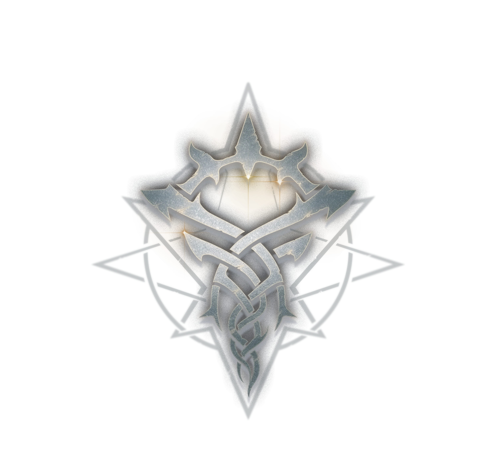

The Church of the Fool, was founded in the year 1352 of the Fifth Epoch after the City of Silver and Moon City residents left the Forsaken Land of the Gods. All the residents believe in The Fool. Aside from those, other believers of The Fool come from some members of the Abraham Family, members of the Tarot Club, members of the Rose School of Thought's Temperance Faction, and the believers of the Church of the Sea God. Their current main church is in New City of Silver in Rorsted Archipelago. The name of the cathedral is The Fool's Cathedral. The Holy Bible, the Order of Mass, and prayer details were written by the City of Silver. It was based on their knowledge of the miracles Mr. Fool had shown, combined with the religious scriptures left behind by the Creator.[2] Some time before the year 1358 of the Fifth Epoch, the Church of the Fool had received acknowledgement by all other Orthodox Churches, and The Fool was officially recognized as an Orthodox God. They don't contain hostility toward other Orthodox Churches.
Across past, present, and future, The Fool reigns supreme over the Spirit World. He is also the King of Yellow and Black who wields good luck. A beacon for all in the pursuit of eternity. He is compassionate, benevolent, and the savior of this world. He allows people to address him as ."him". instead of "Him". He resides above both reality and the Spirit World. His benevolence extends to Heaven and the land. Beside him stand eight angels.
The Angel of Mercury is the embodiment of fate, The Fool's most cherished Angel.
The Angel of Death has followed The Fool for the longest period of time and is the consul of the Underworld.
The Angel of Redemption is the Fool's bugle, once taking on the form of Gehrman Sparrow to deliver his revelations.
The Angel of Life is the crystallization of wisdom itself, the indestructible spirituality that resides in everyone’s body.
The Angel of Retribution is beside the Fool's throne. "He" is the Fool's lightning, the Fool's rage, and the Fool's palm, the judge of all the fallen and the ones who aren't chaste.
Next to the Angel of Retribution is the Angel of the Holy Spirit, reigning over all spirits and representing The Fool in controlling the Spirit World.
The Angel of Time was an angel of ancient times. "He" eventually submitted to The Fool and now strikes the bell of Heaven.
The Angel of Stars is a witness, a recorder, the eyes and ears of The Fool.

The symbol of the Church of the Fool is The Fool Sacred Emblem. Its the pupil-less eye and contorted lines of mysticism in concealment and change, established during his time of founding the Tarot Club. It is a silver-white Sacred Emblem emitting a radiant glow under the sunlight. The Fool's bible is a black-and-silver patterned book.
High Priest Nim of the New Moon City invented the prayer gestures to express their gratitude and devotion to The Fool. They would press the right palm against the left chest, accompanied by spoken: "Praise be to Mr. Fool". As of 1358, the Church of the Fool's customary prayer is to press their hand to their chest and bow slightly.
.
.